소음진동기사(구) (2011-03-20 기출문제)
1과목: 소음진동개론
1. 다음 중 A청감보정특성(중심주파수: 1kHz)과 C청감 보정특성과의 상대응답도(dB) 차이가 가장 큰 주파수대역은?
- 10000Hz
- 1000Hz
- 250Hz
- 31.5Hz
(정답률: 알수없음)

2. 1/3 옥타브밴드 분석기의 밴드폭은 463.2Hz 였다. 이 분석기의 중심주파수 fc는 약 몇 Hz인가?
- 463.2
- 926.4
- 1000
- 2000
(정답률: 알수없음)
3. 진동발생원의 진동을 측정한 결과, 진동가속도 진폭이 2×10-2m/sec2이었다. 이를 진독가속도레벨(VAL)로 나타내면?
- 57dB
- 60dB
- 63dB
- 67dB
(정답률: 알수없음)
4. 음파에 대한 일반적인 성질로 옳지 않은 것은?
- 대기의 온도차에 의한 경우 주간(지표부근의 온도가 상공보다 고온)에는 보통 지표쪽으로 굴절한다.
- 음원보다 상공의 풍속이 클 때 풍하측에서는 지면쪽으로 굴절한다.
- 낮은 주파수의 음은 고주파수 음에 비해 회절하기 쉽다.
- 음의 굴절현상은 Snell의 법칙으로 설명될 수 있다.
(정답률: 알수없음)
5. 음의 영향에 관한 설명으로 옳지 않은 것은?
- 항공기 속도가 음속을 초과하면 음파가 항공기 앞으로 전파하지 못하므로 원추 모양의 충격파가 뱃머리에서 물결이 퍼져나가듯 전파된다.
- 초파음은 공기에 의해 흡수가 잘되는 편이므로 음원 근처에서 조사가 이루어져야 한다.
- 호음파음은 직진성이 크고, X선과 같이 상을 만든다.
- 20Hz보다 낮은 초저주파음은 가청주파수가 아니므로 인체가 전혀 느끼지 못한다.
(정답률: 알수없음)
6. 공조기소음 등과 같은 광대역의 정상적인 소음을 평가하기 위해 Beranek가 제안한 것으로, 대상소음을 옥타브분석하여 대역음압레벨을 구한 후 밴드레벨을 기입하여 각 대역 중 최대값을 구하는 것은?
- NC
- LNP
- NEF
- SL
(정답률: 알수없음)
7. 두 개의 소음원이 동시에 가동되고 있다. 첫 번째 소음원 x1(t)=3sin(555t), 두 번째 소음원x2(t)=4sin(600t)으로 조화운동 할 때, 사람이 듣게 되는 소음의 주파수는?
- 55Hz
- 92Hz
- 186Hz
- 575Hz
(정답률: 알수없음)
8. 확산음장의 특징으로 옳은 것은?
- 근음장(near field)에 속한다.
- 밀폐된 실내의 모든 표면에서 입사음이 거의 100% 반사된다면 실내 모든 위치에서 음에너지밀도가 일정하다.
- 위치에 따라 음압 변동이 매우 심하고 음원의 크기나 주파수, 방사면의 위상에 크게 영향을 받는다.
- 무향실은 확산음장이 얻어지는 공간이다.
(정답률: 알수없음)
9. 음장의 종류 중 음원의 직접음과 벽에 의한 반사음이 중첩되는 구역을 무엇이라고 하는가?
- 근접음장
- 확산음장
- 근음장
- 잔향음장
(정답률: 알수없음)
10. 음파의 회절에 관한 설명으로 가장 적합한 것은?
- 높은 주파수 음이 낮은 주파수 음에 비해 회절하기 쉬우므로 장애물이 있어도 높은 음은 잘 들린다.
- 음파의 회절은 음파가 한 매질에 타 매질로 통과할 때 구부러지는 현상이다.
- 일반적으로 파장이 크고, 장애물이 작을수록 회절이 잘 된다.
- 기온의 역전층 중에서는 회절에 의해 파면이 아랫 방향으로 꺾이므로 먼 거리에서도 잘 들리는 현상과 관계가 깊다.
(정답률: 알수없음)
11. 등청감곡선에 관한 설명으로 옳지 않은 것은?
- 100Hz 순음의 음압레벨과 같은 크기로 늘리는 각주파수의 음압레벨을 연결한 것이다.
- 음압레벨이 커질수록 등청감곡선에서의 주파수별 음압레벨차가 커진다.
- 저주파일수록 청감에 둔해짐을 알 수 있다.
- 청감은 4000Hz 주위의 음에서 특히 예민하다.
(정답률: 알수없음)
12. 음원이 이동할 때 들리는 소리의 주파수가 음원의 주파수와 다르게 느껴지는 효과는?
- 아이링(Fyring) 효과
- 도플러(Doppler) 효과
- 일치(coincident) 효과
- 옴-헬므홀쯔(Ohm-Helmholtz) 효과
(정답률: 알수없음)
13. 자유공간에 있는 무지향성 점음원의 음향출력이 2배로 되고, 측정점과 음원의 거리도 2배로 되었다고 하면 음압레벨은 처음에 비해 얼마만큼 변화하는가?
- 2 dB 감소
- 3 dB 감소
- 6 dB 감소
- 9 dB 감소
(정답률: 알수없음)
14. 음압의 실효치가 70N/m2인 평면파의 경우 음의 세기는 약 몇 W/m2이 되는가? (단, 표준대기에서 ρC = 406kg/m2ㆍs로 계산할 것)
- 16
- 12
- 8
- 4
(정답률: 알수없음)
15. 면적 10m2의 창을 음압레벨 100dB인 음파가 통과할 때, 이 창을 통과한 음파의 음향파워는?
- 10W
- 1W
- 0.1W
- 0.01W
(정답률: 알수없음)
16. 소음의 영향으로 옳지 않은 것은?
- 소음의 순환계에 미치는 영향으로 맥박이 감소하고, 말초혈관이 확장된다.
- 노인성 난청은 6000Hz정도에서부터 시작된다.
- 소음에 폭로된 후 2일~3주 후에도 정상청력으로 회복되지 않으면 소음성 난청이라 부른다.
- 어느 정도 큰 소음을 들은 직후에 일시적으로 청력이 저하되었다가 수초~수일 후에 정상청력으로 돌아오는 현상을 TTS 라고 한다.
(정답률: 알수없음)
17. 60dB의 소음원과 80dB의 소음원을 동시에 같은 장소에서 가동시켰을 때 몇 dB의 소음이 되는가?
- 85
- 80
- 75
- 70
(정답률: 알수없음)
18. 보정회를 통한 진동레벨을 산출할 때 주파수 대역이 8≤f≤90Hz 인 경우 상하 진동에 대한 주파수별 보정가속도 실효치(m/s2)는?
- 2 × 10-5 × f-(1/2)
- 10-5
- 0.125 × 10-5 × f-(1/2)
- 0.125 × 10-5 × f
(정답률: 알수없음)
19. 다음 중 소밀파에 해당하는 것은?
- 음파
- 전자기파(광파)
- 물결파(수면파)
- 지진파의 S파
(정답률: 알수없음)
20. A특성 청감보정회로에 대한 설명으로 옳지 않은 것은?
- 종래에 40phon의 등청감 곡선에 유사한 감도를 갖도록 설정한 보정회로이다.
- A, B, C, D특성 청감보정회로 중 A특성 청감조정 회로가 인체 감각과 가장 잘 대응한다.
- 저음역대 신호를 많이 보정한 특징이 있다.
- 보정값이 C특성 보정회로보다 항상 작다.
(정답률: 알수없음)
2과목: 소음방지기술
21. 공장의 일부를 벽(Wall)으로 차단하여 사무실로 쓰고자 한다. 벽은 투과손실 51dB인 벽돌(brick)과 투과 손실 18dB인 유리문(glass door)으로 만들려고 하며, 벽의 전체면적은 10m2이고, 이중 2m2가 유리문이라면 벽의 총합투과손실은 몇 dB인가?
- 38
- 32
- 29
- 25
(정답률: 알수없음)
22. 소음제어 등을 위한 자재류와 그 특성으로 가장 거리가 먼 것은?
- 흡음재 : 음에너지를 열에너지 등으로 변환
- 차음재 : 음의 투과를 저감
- 제진재 : 판의 진동으로 발생하는 음에너지 저감
- 차진재 ; 큰 내부 손실이 있는 점탄성 자재를 이용한 반사음 저감
(정답률: 알수없음)
23. 무향실과 구별되는 진향실의 특징으로 가장 적합한 것은?
- 실내의 벽면 흡음율을 0 에 가깝게 설계한다.
- 공중의 한 점에서 방출되는 음은 모든 방향으로 역2승 법칙에 따라 자유스럽게 확산하는 음장을 만족하는 실이다.
- 자유음장 조건을 만족하는 실이다.
- 주로 소음원의 정확한 음향특성 및 음향파워레벨조사, 소음 발생부위 탐사 등을 위해 활용된다.
(정답률: 알수없음)
24. 소음기에 관한 다음 설명 중 가장 거리가 먼 것은?
- 간섭형 소음기는 음의 통로구간을 둘로 나누어 각각의 경로차가 반파장(λ/2)에 가깝게 하는 구조이다.
- 팽창형 소음기는 단면 불연속부의 음에너지 반사에 의해 감음하는 구조로, 팽창부에 흡음재를 부착하면 고음역의 감음량도 증가한다.
- 흡음덕트형 소음기는 저음역에서 감쇠효과가 좋다.
- 공동공명기형 소음기의 공동 내에 흡음재를 충진하면 저주파음 소거의 탁월현상이 완화된다.
(정답률: 알수없음)
25. 다음 소음대책 중 가장 먼저 하여야 할 사항은?
- 차음재 또는 흡음재 등 선정
- 어느 주파수 대역을 얼마만큼 저감시킬 것인가를 파악
- 수음점의 위치확인
- 수음점에서의 규제기준 확인
(정답률: 알수없음)
26. 가로, 세로, 높이가 각각 10m, 8m, 3m인 방의 벽, 천장, 바닥의 1kHz 밴드에서의 흡음율이 각각 0.1, 0.2, 0.3이다. 천장재를 1kHz 밴드에서의 흡음율이 0.7인 흡음재로 대체할 경우 감음량은?
- 1.2dB
- 3.4dB
- 6.6dB
- 10.9dB
(정답률: 알수없음)
27. 차음특성에서 단일벽의 일치효과로 인해 투과손실이 현저하게 감소하는 이유로 가장 적합한 것은?
- 입사음의 주파수가 증가하기 때문이다.
- 음파가 벽면에 난입사를 하기 때문이다.
- 음파가 벽면에 수직입사를 하기 때문이다.
- 벽면의 공진현상 때문이다.
(정답률: 알수없음)
28. 길이가 40m, 폭 20m 및 높이 4m인 주차장이 있다. 이 주차장 내에서의 잔향시간이 2.0초 일 때, 잔향시간 측정법에 의한 이 주차장의 평균 흡음율은?
- 0.03
- 0.08
- 0.12
- 0.19
(정답률: 알수없음)
29. A흡음재의 1/3 옥타브대역으로 측정한 각 중심주파수에서의 흡음율이 다음과 같았다. 이 흡음재의 감음계수는?
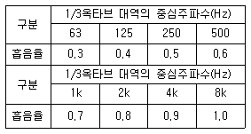
- 0.45
- 0.55
- 0.65
- 0.75
(정답률: 알수없음)
30. A시료의 흡음성능 측정을 위해 정재파 관내법을 사용하였다. 1000Hz 순음인 sine파의 정재파비가 1.1이었다면 이 흡음재의 흡음율은?
- 0.816
- 0.894
- 0.983
- 0.998
(정답률: 알수없음)
31. 단일벽의 면밀도가 50kg/m2, 이 벽면에 수직입사하는 입사용의 주파수 500Hz일 때, 이 벽체의 투과손실은?
- 35dB
- 40dB
- 45dB
- 50dB
(정답률: 알수없음)
32. 그림 A ~ D 단면의 방음벽 중 500Hz에 대한 감음효과가 가장 큰 것은? (단, 자유공간의 반무한장벽이며, 소음원과 수음점의 표고는 1m씩이며, A, B, C, D 방음벽의 높이는 각각 5m, 4.5m, 5.5m, 4m이다.)
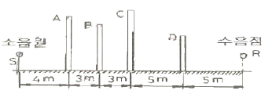
- A
- B
- C
- D
(정답률: 알수없음)
33. 각종 소음기에 관한 설명으로 옳지 않은 것은?
- 취출구 소음기는 압축공기나 보일러 고압증기의 대기방출 등과 같은 경우에 사용된다.
- 팽창형 소음기으 감음주파수는 팽창부의 면적(m)에 따라 결정되며, m=λ/4로 하는 것이 좋다.
- 간섭형 소음기의 감음특성은 저ㆍ중음역의 탁월주파수 성분에 유효하다.
- 공명형 소음기의 최대 투과손실치는 공명주파수에 서 일어난다.
(정답률: 알수없음)
34. 팽창형 소음기의 입구와 팽창부의 직경이 각각 0.4m, 1m 일 때, 이 소음기의 최대투과손실은?
- 32dB
- 23dB
- 10dB
- 2dB
(정답률: 알수없음)
35. 단일벽의 차음특성 중 투과손실이 옥타브당 6dB씩 증가하는 영역은?
- 강성제어영역
- 감쇠제어영역
- 일치효과영역
- 질량제어영역
(정답률: 알수없음)
36. 다음은 작업장 바닥에 놓인 송풍기의 소음대책에 관한 설명이다. ( )안에 가장 적합한 것은?
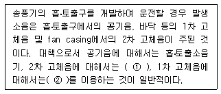
- ① 방음 lagging, ② 진동차진구조
- ① 흡음재, ② 진동차진구조
- ① 방음 lagging, ② 흡음재
- ① 흡음재, ② 흡음재
(정답률: 알수없음)
37. 중공이중벽의 차음성능에 대한 설명으로 옳은 것은?
- 중공이중벽 내에 글라스울 등으로 충진하면 공명주 부근의 투과손실이 어느 정도 개선된다.
- 중공이중벽은 일반적으로 동일 중량의 단일벽에 비해 50dB 정도 투과손실이 증가하며, 공기층 2cm 정도 하는 것이 바람직하다.
- 중공이중벽은 공진주파수영역에서 차음성능이 매우 좋다.
- 중공이중벽내 공기층 두께가 달라져도 차음성능은 변하지 않는다.
(정답률: 알수없음)
38. 반무한 방음벽의 직접음 회절감쇠치가 20dB(A), 반사음 회절감쇠치가 15dB(A)이고, 투과손실치가 18dB(A)일 때, 이 벽에 의한 삽입손실치는 약 몇 dB(A)인가? (단, 음원과 수음점이 지상으로부터 약간 높은 위치에 있다.)
- 9dB
- 12dB
- 15dB
- 19dB
(정답률: 알수없음)
39. 다음 흡음재료 중 동일 종류의 재료에서 두꺼울수록 중음역의 흡음율이 높아지는 다공질 재료의 분류에 해당하지 않는 것은?
- 암면
- 뿜칠섬유재료
- 유공알류미늄관
- 발포수지재료
(정답률: 알수없음)
40. 최근 능동소음제어 기술을 이용한 소음저감 사례가 산업계에 다양하게 소개되고 있다. 이 능동소음제거의 특징으로 옳지 않은 것은?
- 원래의 소음에 제어음을 생성하여 두 음을 중첩, 상쇄시켜 의도한 위치에서의 음압을 감소시킨다.
- 원래의 소음 음장과 제어 음장과의 상호 선형적인성이 있어야 한다.
- 제어대상 소음과 제어음 사이에 180도의 위상차가 없다.
- 1kHz 이상의 고주파수 영역의 소음저감에 적합하다.
(정답률: 알수없음)
3과목: 소음진동 공정시험 기준
41. 다음은 철도진동한도 측정방법이다. ( )안에 알맞은 것은?
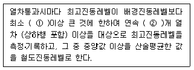
- ① 10 dB, ② 5
- ① 10 dB, ② 10
- ① 5dB, ② 5
- ① 5 dB, ② 10
(정답률: 알수없음)
42. 환경기준 중 소음측정방법으로 옳지 않은 것은?
- 소음도 기록기가 없는 경우에는 소음계만으로 측정 할 수 있으나, 통상 소음계와 소음도 기록기를 연결하여 측정∙기록하는 것을 원칙으로 한다.
- 소음계의 레벨레인지 변환기는 측정지점의 소음도를 예비조사한 후 적절하게 고정시켜야 한다.
- 옥회측정을 원칙으로 하며, 측정점 선정시에는 당해지역 소음평가에 현저한 영향을 미칠 것으로 예상되는 공장 및 사업장, 철도 등의 부지 내는 피해야 한다.
- 일반지역의 경우에는 가능한 한 측정점 반경 10 m이내에 장애물(담, 건물, 기타 반사성 구조물 등)이 없는 지점의 지면 위 3 ~ 5 m로 한다.
(정답률: 알수없음)
43. 배출허용기준 중 소음측정방법에서 측정자료 분석사항으로 옳은 것은?
- 측정자료는 소음도의 계산과정에서는 소수점 첫째자리를 유효숫자로 하고, 대상소음도(최종값)는 소수점 첫째자리에서 반올림한다.
- 디지털 소음자동분석계를 사용할 경우 샘플주기는 15초 이내에서 결정한다.
- 소음도 기록기를 사용하여 측정할 경우 30분 이상 측정∙기록한 값 중 가장 큰 값을 측정소음도로 한다.
- 소음계만을 사용하여 측정할 경우 10초 간격, 10회 이상 판독∙기록한다.
(정답률: 알수없음)
44. 소음ㆍ진동 공정시험기준에서 정한 소음과 관련한 용어의 정의로 옳지 않은 것은?
- 소음원 : 소음을 발생하는 기계∙기구, 시설 및 기타 물체 또는 환경부령으로 정하는 사람의 활동을 말한다.
- 지발(遲發) 발파 : 수분 내에 시간차를 두고 발하는 것을 말한다. 단, 발파기를 3회 이내에서 사용하는 것에 한한다.
- 평가소음도 : 대상소음도에 보정치를 보정한 후 얻어진 소음도를 말한다.
- 배경소음 : 한 장소에 있어서의 특정의 음을 대상으로 생각할 경우 대상소음이 없을 때 그 장소의 소음을 대상소음에 대한 배경소음이라 한다.
(정답률: 알수없음)
45. 소음계의 구조별 성능에 관한 설명으로 옳지 않은 것은?
- 마이크로폰 : 지향성이 작은 압력형으로 한다.
- 증폭기 : 마이크로폰에 의하여 전기에너지를 음향에너지로 변환시킨 양을 증폭시키는 것을 말한다.
- 출력단자 : 소음신호를 기록기 등에 전송할 수 있는 교류단자를 갖춘 것이어야 한다.
- 교정장치 : 80dB(A) 이상이 되는 환경에서도 교정이 가능하여야 한다.
(정답률: 알수없음)
46. 발파진동 측정시 디지털 진동자동분서계를 사용하여 측정진동레벨을 분석할 때 샘플주기는 최대 얼마 이하로 해야 하는가?
- 0.1초
- 0.5초
- 1.0초
- 5.0초
(정답률: 알수없음)
47. 환경기준 중 소음측정방법에서 낮 시간대의 측정시간 및 횟수 기준은?
- 30분 이상 간격으로 8회 이상
- 1시간 이상 간격으로 8회 이상
- 1시간 이상 간격으로 4회 이상
- 2시간 이상 간격으로 4회 이상
(정답률: 알수없음)
48. 진동레벨계의 성능기준으로 옳은 것은?
- 진동픽업이 횡강도는 규정주파수에서 수감축 감도에 대한 차이가 15dB 이상이어야 한다.(연직특성)
- 레벨레인지 변환기가 있는 기기에 있어서 레벨레인지 변환기의 전환오차가 1dB 이내이어야 한다.
- 지시계기의 눈금오차는 1dB 이내이어야 한다.
- 측정가능 주파수 범위는 20 ~ 20000Hz 이상이어야 한다.
(정답률: 알수없음)
49. 소음계를 기본구조와 부속장치로 구분할 때, 다음 중 기본구조에 해당하는 것으로만 옳게 나열된 것은?
- 표준음 발생기, 교정장치
- 지시계기, 표준음 발생기
- 청감보정회로, 지시계기
- 교정장치, 삼각대
(정답률: 알수없음)
50. 규제기준 중 생활진동 측정방법에서 진동레벨기록기를 사용하여 측정할 경우 기록지상이 지시치의 변동폭이 5dB이내일 때 배경진동레벨을 정하는 기준은?
- 구간내 최대치부터 진동레벨의 크기순으로 5개를 산술평균한 진동레벨
- 구간내 최대치부터 진동레벨의 크기순으로 10개를 산술평균한 진동레벨
- L10 진동레벨 계산방법에 의한 L10값
- L5 진동레벨 계산방법에 의한 L5값
(정답률: 알수없음)
51. 소음계의 청감보정회로에서 자동차의 소음측정용은 A특성외에 어떤 특성도 함께 갖추어야 하는가?
- B특성
- C특성
- E특성
- F특성
(정답률: 알수없음)
52. 규제기준 중 생활진동 측정 시 진동레벨계의 감각 보정회로는 별도 규정이 없을 경우 어디에 고정하여 측정하여야 하는가?
- V특성(수직)
- X특성(수평)
- Y특성(수평)
- V특성(수직) 및 X, Y특성(수평)을 동시에 사용
(정답률: 알수없음)
53. 소음계의 측정감도를 교정하는 표준음 발생기의 발생음 오차범위로 옳은 것은?
- ±0.1dB 이내
- ±0.5dB 이내
- ±1dB 이내
- ±2dB 이내
(정답률: 알수없음)
54. 진동레벨계의 사용기준 중 측정가능 진동레벨 성능기준 범위로 옳은 것은?
- 30~120dB 이상이어야 한다.
- 45~120dB 이상이어야 한다.
- 50~130dB 이상이어야 한다.
- 65~130dB 이상이어야 한다.
(정답률: 알수없음)
55. 진동레벨기록기를 사용하여 배출허용기준 중 진동을 측정할 경우 “진동레벨계 기록지상의 지시치가 불규칙하고 대폭적으로 변할 때” 측정진동레벨로 정하는 기준은? (단, 모눈종이 상에 누적도곡 선(횡축에 진동레벨, 좌측 종축에 누적도수를, 우측종축에 백분율을 표기)을 이용하는 방법에 의한다.)
- 80% 횡산이 누적도곡선과 만나는 교점에서 수선을 그어 횡축과 만나는 점의 진동레벨
- 85% 횡선이 누적도곡선과 만나는 교점에서 수선을 그어 횡축과 만나는 점의 진동레벨
- 90% 횡선이 누적도곡선과 만나는 교점에서 수선을 그어 횡축과 만나는 점의 진동레벨
- 95% 횡선이 누적도곡선과 만나는 교점에서 수선을 그어 횡축과 만나는 점의 진동레벨
(정답률: 알수없음)
56. 다음 진동레벨계의 구조 중 레벨레인지 변환기에 관한 설명이다. ( )안에 가장 알맞은 것은?
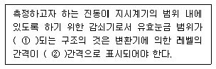
- ① 30dB 초과 ② 10dB
- ① 30dB 이하 ② 10dB
- ① 50dB 초과 ② 5dB
- ① 50dB 이하 ② 5dB
(정답률: 알수없음)
57. 소음ㆍ진동 공정시험기준에서 규정하는 진동레벨과 관련된 용어의 설명으로 거리가 먼 것은?
- 진동레벨은 진동레벨의 감각보정회로(수직)를 측정한 진동가속도레벨의 지시치를 말한다.
- 진동가속도레벨의 정의는 10 log(a/a0)의 수식에 따른다. (여기서, a는 측정하고자 하는 진동의 가속도, a0는 기준진동의 가속도로 한다.)
- 진동레벨의 단위는 dB(V)로 표시한다.
- 진동가속도 실효치 단위는 m/s2이다.
(정답률: 알수없음)
58. 배출허용기준 중 소음측정방법으로 옳은 것은?
- 피해가 예상되는 적절한 측정시간에 2지점 이상 지점수를 선정ㆍ측정하여 그중 가장 높은 소음도를 측정 소음도로 한다.
- 손으로 소음계를 잡고 측정할 경우 소음계는 측정자의 몸으로부터 0.3 m 이상 떨어져야 한다.
- 풍속이 5 m/s 이상일 때에는 반드시 마이크로폰에 방음망을 부착하여 측정한다.
- 측정소음도의 측정은 대상 배출시설의 소음발생기기를 가능한 한 중간출력으로 가동시킨 정상상태에서 측정하여야 한다.
(정답률: 알수없음)
59. 배경소음이 50dB(A)인 공장에서 압축기만을 가동하였을 때 측정소음도는 55dB(A), 압축기와 송풍기를 동시에 가동하였을 경우 측정소음도는 60dB(A)였다. 압축기, 송풍기, 분쇄기를 동시에 가동하였을 때 측정 소음도가 70dB(A)일 경우, 대상소음도는 몇 dB(A)인가?
- 55
- 60
- 65
- 70
(정답률: 알수없음)
60. 1시간 동안 측정한 철도소음의 최고소음도와 배경 소음도의 차가 5dB일 경우, 열차의 1시간 등가소음도가 68dB(A)이고, 1시간 동안 열차의 왕복통행량이 35대 일 때 열차의 최고 평균소음도는?(단, 전철, 고속철도, 경부ㆍ호남선 등 복선구간, 경부선 복복선 구간(서울~구로), 중앙, 태백, 영동선 등 단선구간 어디에도 해당하지 않는다.)
- 70dB(A)
- 75dB(A)
- 80dB(A)
- 85dB(A)
(정답률: 알수없음)
4과목: 진동방지기술
61. 다음 그림에서 m = 80kg, K = 5 × 106N/m, 질량 m 에는 F(t)=10 sin 220t N 의 힘이 작용한다. 이 때 질량 m 의 동적변위 진폭은?
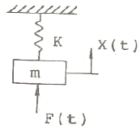
- 8.87 × 10-3mm
- 6.86 × 10-3mm
- 4.43 mm
- 3.43 mm
(정답률: 알수없음)
62. 고유진동수에 대한 강제진동수의 비가 3 일 때, 진동전달율 T는? (단, 감쇠는 없다.)
- 1/3
- 1/4
- 1/8
- 1/15
(정답률: 알수없음)
63. 지반전파의 감쇠정수가 0.016인 표면파(n=0.5)가 지반을 전반하는 경우 진동원에서 5m 거리의 진동레벨에 대한 25m 거리에서의 진동레벨차는 약 몇 dB인가?
- 10
- 18
- 26
- 33
(정답률: 알수없음)
64. 다음 중 공기 스프링의 주요 특성에 해당하는 것은?
- 사용진폭이 큰 것이 많아 별도의 댐퍼가 필요하다.
- 자동제어가 불가능하다.
- 부하능력이 광범위하다.
- 공기 중 오존에 의해 산화된다.
(정답률: 알수없음)
65. 방진대책으로 거리가 먼 것은?
- 진동원의 위치를 가깝게 하여 거리감쇠를 작게 한다.
- 가진력을 감쇠시킨다.
- 수진측의 강성을 변경한다.
- 탄성을 유지한다.
(정답률: 알수없음)
66. 질량 250kg의 기계가 600rpm으로 운전되며, 1회 전시마다 불평형력이 상하방향으로 작용한다. 스프링 4개를 병렬로 사용하여 진동전달손실 10dB를 얻고자 할 때 스프링 1개의 스프링정수(kN/cm)는?
- 62
- 123
- 247
- 493
(정답률: 알수없음)
67. 질량 0.25kg인 물체가 스프링에 매달려 있다면 정적변위량(mm)은? (단, 스프링 정수는 0.155N/mm) 이다.)
- 약 8 mm
- 약 16 mm
- 약 32 mm
- 약 64 mm
(정답률: 알수없음)
68. 감쇠가 없는 계에서 진폭이 이상할 정도로 크게 나타날 때의 원인은?
- 고유진동수가 강제진동수보다 현저하게 작다.
- 고유진동수가 강제진동수보다 현저하게 크다.
- 고유진동수와 강제진동수가 일치되어 있다.
- 고유진동수와 강제진동수 간에 아무런 관계가 없다.
(정답률: 알수없음)
69. 다음 시간(t)에 따른 변위량(진폭)의 변화 그래프 중 부족감쇠 자유진동을 나타내는 것은?
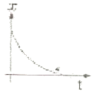
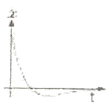
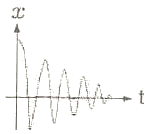
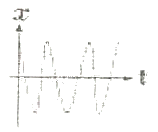
(정답률: 알수없음)
70. 조화운동을 아래의 삼각함수로 표시할 때, 다음 중 진동수를 올바르게 표시한 식은?
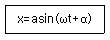
- 2πw
- w/2π
- 2π/w
- (2πw)2
(정답률: 알수없음)
71. X1=3cos ωt와 X2=5cos(ωt+π/2)를 합성했을 때 그 진폭은?
- 3.61
- 4.25
- 5.00
- 5.83
(정답률: 알수없음)
72. 외부에서 가해지는 강제진동수를 f라 하고 계의 고유진동수를 fn이라 할 때, 가진되는 외력보다 전달력이 항상 작게 되는 영역은?
- f/fn=1
- f/fn＜√2
- f/fn=√2
- f/fn＞√2
(정답률: 알수없음)
73. mx+kx=Fsinωt의 운동방정식을 만족시키는 진동이 일어나고 있을 고유 각진동수는?
- k∙m
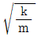
- k/m
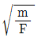
(정답률: 알수없음)
74. 감쇠 고유진동을 하는 계에서 감쇠 고유진동수는 10Hz이고, 이 진동계의 비감쇠 고유진동수는 20Hz 일 때 감쇠비는?
- 1/2
- √3/2
- 1/3
- √2/3
(정답률: 알수없음)
75. 감쇠요소에 관한 설명으로 옳은 것은?
- 감쇠요소란 운동체에 저항을 주어 운동체의 위치에너지를 동적인 저항에너지로 변환시키는 장치이다.
- 마찰댐퍼는 구조는 복잡하나 오일댐퍼와 비교시 감쇠력은 안전하고 신뢰성이 높다.
- 오일댐퍼의 감쇠력은 넓은 진동수 범위에 걸쳐 안정되어 있다.
- 보통 오일댐퍼는 부착자세는 자유롭지만 부착각도에는 제약이 있다.
(정답률: 알수없음)
76. 기계를 스프링으로 지지할 때 가진 주파수가 100Hz인 기계에 정적변위 0.2cm인 스프링을 쓰면 진동전달율은 얼마로 되는가?
- 0.0126
- 0.0178
- 0.0250
- 0.⑤0
(정답률: 알수없음)
77. 코일 스프링에서 스프링 정수에 관한 설명으로 옳은 것은?
- 스프링 재료의 직경에 비례한다.
- 스프링 재료 직경의 제곱에 비례한다.
- 스프링 재료 직경의 3제곱에 비례한다.
- 스프링 재료 직경의 4제곱에 비례한다.
(정답률: 알수없음)
78. 가진력에 관한 설명으로 옳지 않은 것은?
- 회전축을 중심으로 r 만큼 떨어진 위치에 있는 불균형 질량 m 이 회전수 n(rpm)으로 회전할 때의 가진력
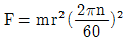
으로 표현된다. - 정적불균형이란 회전부분의 무게중심이 축의 중심으로부터 편심된 위치에 있는 경우를 의미한다.
- 정적균형이 이루어져 있어도 회전축에 직각되는 축주변에 우력이 작용하여 동적불균형이 발생하기도 한다.
- 프레스, 단조기, 말뚝박는 기계, 파쇄기 등은 주로 충격에 의해 진동이 발생한다.
(정답률: 알수없음)
79. 동일한 특성을 가진 2개의 스프링으로 병렬지지하여 기계장치를 방진지지 하고 있다. 이 2개의 스프링을 제거하고 동일 특성을 가진 8개의 새로운 스프링으로 병렬 방진지지하여 고유진동수를 이전의 1/2로 하고자 한다면 새로운 1개의 스프링 정수는 이전의 스프링 정수에 비해 어떻게 변화되어야 하는가?
- 이전의 16배
- 이전의 1/16
- 이전의 4배
- 이전의 1/4
(정답률: 알수없음)
80. 기계를 기초에 고정하고 운전하였더니 기계의 상면의 높이가 998mm부터 1002mm 사이를 매분 240회 진동하였다. 이 진동의 가속도는?
- 0.63m/sec2
- 1.26m/sec2
- 2.52m/sec2
- 3.78m/sec2
(정답률: 알수없음)
5과목: 소음진동 관계 법규
81. 환경정책기본법상 국가환경종합계획에 포함되어야 할 사항으로 거리가 먼 것은? (단, 그 밖의 부대사항은 제외)
- 인구∙산업∙경제∙토지 및 해양의 이용 등 환경변화 여건에 관한 사항
- 환경오염 배출업소 지도ㆍ단속 계획
- 사업의 시행에 소요되는 비용의 산정 및 재원 조달 방법
- 환경오염원ㆍ환경오염도 및 오염물질 배출량의 예측과 환경오염 및 환경훼손으로 인한 환경질의 변화전망
(정답률: 알수없음)
82. 소음 진동관리법규상 배출허용기준에 적합한지 여부를 확인하기 위하여 배출시설 및 방지설에 대한 소음∙진동검사를 의뢰를 할 수 있는 기관에 해당하지 않는 것은?
- 국립환경과학원
- 중앙환경분쟁조정위원회
- 영산강유역환경청
- 원주지방환경청
(정답률: 알수없음)
83. 소음진동관리법규상 확인검사대행자와 관련한 행정처분기준 중 고의 또는 중대한 과실로 확인검사 대행업무를 부실하게 한 경우 1차 행정처분기준으로 옳은 것은?
- 개선명령 및 사용정지 2일
- 경고
- 인증취소
- 업무정지 6일
(정답률: 알수없음)
84. 다음은 소음진동관리법상 배출허용기준 준수의무에 관한 사항이다. 밑줄친 기간(기준)은?
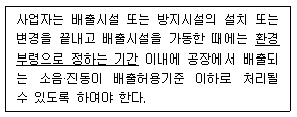
- 가동개시일
- 가동개시일부터 30일
- 가동개시일부터 60일
- 가동개시일부터 90일
(정답률: 알수없음)
85. 소음진동관리법령상 공항 인근 지역으 항공기소음의 한도기준은? (단, 항공기소음영향도(WECPNL)를 기준으로 한다.)
- 75
- 80
- 90
- 100
(정답률: 알수없음)
86. 소음진동관리법규상 환경기술인 자격기준 중 소음∙잔동상업기사를 대체할 수 있는 자는?
- 안전분야 산업기사로서 환경분야에서 2년 이상 종사한 자
- 전기분야 산업기사로서 환경분야에서 2년 이상 종사한 자
- 대기환경 산업기사로서 환경분야에서 2년 이상 종사한 자
- 수질환경 산업기사로서 환경분야에서 2년 이상 종사한 자
(정답률: 알수없음)
87. 소음진동관리법상 생활소음, 진동이 규제기준을 초과하는 작업시간의 조정명령을 받은 자가 그 명령을 위반한 경우 벌칙기준은?
- 3년 이하의 징역 또는 1천500만원 이하의 벌금
- 1년 이하의 징역 또는 1천만원 이하의 벌금
- 6개월 이하의 징역 또는 500만원 이하의 벌금
- 300만원 이하의 과태료
(정답률: 알수없음)
88. 소음진동관리법규상 환경기술인이 환경보전협회 등에서 실시하는 교육을 받아야 하는 교육기간기준은? (단, 정보통신매체를 이용하여 원격교육을 실시하는 경우 등은 제외)
- 3일 이내
- 5일 이내
- 7일 이내
- 10일 이내
(정답률: 알수없음)
89. 소음진동관리법령상 소음진동배출시설을 설치하고자 할 때 특별자치도지사 또는 시장ㆍ군수ㆍ구청장의 허가를 받아야 하는 대통령령이 정하는 지역기준에 해당하지 않는 것은?
- 의료법에 따른 종합병원의 부지경계선으로부터 직선거리 50m 이내의 지역
- 도서관법에 따른 공공도서관의 부지경계선으로부터 직선거리 50m 이내의 지역
- 영유아보육법에 따른 보육시설 중 입소규모 50명 이상인 보육시설의 부지경계선으로부터 직선거러 50m이내의 지역
- 주택법에 따른 공동주택의 부지경계선으로부터 직선거리 50m 이내의 지역
(정답률: 알수없음)
90. 소음진동관리법상 특별자치도지사 또는 시장∙군수∙구청장이 소음진동 배출허용기준 초과와 관련하여 개선명령을 받은 자에게 이를 이행하지 아니하였을 때 내릴 수 있는 조치로 가장 적합한 것은?
- 이전명령
- 개선명령
- 조업정지
- 경고
(정답률: 알수없음)
91. 소음진동관리법규상 교육기관의 장이 다음 해의 교육계획을 환경부장관에게 제출하여 승인을 받아야하는 기간은?
- 매년 6월 30일까지
- 매년 7월 31일까지
- 매년 11월 30일까지
- 매년 12월 31일까지
(정답률: 알수없음)
92. 소음진동관리법규상 소형 화물자동차의 제작자동차 배기소음 허용기준으로 옳은 것은? (단, 2006년 1월 1일 이후에 제작되는 자동차 기준)
- 100dB(V) 이하
- 103dB(V) 이하
- 1⑤dB(V) 이하
- 110dB(V) 이하
(정답률: 알수없음)
93. 다음은 소음진동관리법규상 상시 측정자료의 제출에 관한 사항이다. ( )안에 알맞은 것은?
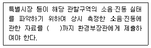
- 매월 말일
- 매분기 다음 달 말일
- 매반기 다음 달 말일
- 매년 말일
(정답률: 알수없음)
94. 환경정책기본법령상 관리지역 중 생산관리지역의 소음환경기준으로 옳은 것은? (단, 낮(06:00~22:00) 시간대, 일반지역 기준)
- 45Leq dB(V)
- 55Leq dB(V)
- 65Leq dB(V)
- 75Leq dB(V)
(정답률: 알수없음)
95. 소음진동관리법규상 도시지역 중 전용공업지역의 저녁시간대 공장소음 배출허용 기준은?
- 55dB(V) 이하
- 65dB(V) 이하
- 75dB(V) 이하
- 85dB(V) 이하
(정답률: 알수없음)
96. 소음진동관리법규상 녹지지역의 야간 (22:00~06:00) 의 철도진동 한도기준은?
- 50dB(V)
- 55dB(V)
- 60dB(V)
- 65dB(V)
(정답률: 알수없음)
97. 소음진동관리법규상 공사장 방음시설 설치기준 중 방음벽 높이의 기준은?
- 1m 이상 되어야 한다.
- 1.5m 이상 되어야 한다.
- 3m 이상 되어야 한다.
- 10m 이상 되어야 한다.
(정답률: 알수없음)
98. 소음진동관리법규상 소음배출시설기준에 해당하지 않는 것은? (단, 마력기준시설 및 기계ㆍ기구에 한한다.)
- 20마력 이상의 원심분리기
- 30마력 이상의 제분기
- 10마력 이상의 변속기
- 10마력 이상의 금속절단기
(정답률: 알수없음)
99. 소음진동관리법규상 생활소음ㆍ진동의 규제기준 중 발파소음의 경우 주간의 보정기준으로 옳은 것은?
- 규제기준치(광산의 경우 사업장 규제기준) + 5dB
- 규제기준치(광산의 경우 사업장 규제기준) + 10dB
- 규제기준치(광산의 경우 사업장 규제기준) + 15dB
- 규제기준치(광산의 경우 사업장 규제기준) + 20dB
(정답률: 알수없음)
100. 소음진동관리법령상 제작차 소음허용기준 인증을 면제할 수 있는 자동차에 해당하지 않는 것은?
- 군용∙소방용 및 경호 업무용 등 국가의 특수한 공무용으로 사용하기 위한 자동차
- 여행자 등이 다시 반출할 것을 조건으로 일시 반입하는 자동차
- 항공기 지상조업용으로 반입하는 자동차
- 주한 외국군대의 구성원이 공무용으로 사용하기 위하여 반입하는 자동차
(정답률: 알수없음)